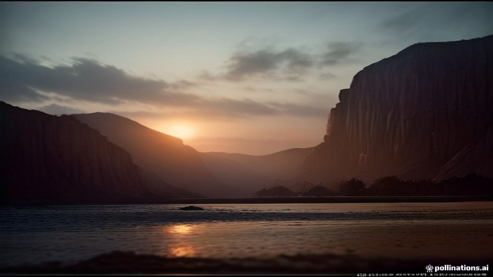

Pakistan's Forex Reserves Edge Up by $15M: A Glimmer of Stability?
Pakistan's foreign exchange reserves recorded a modest increase of $15 million in the week ending October 2, 2026, marking a slight upward movement in the nation's critical financial indicators. This minor accretion offers a cautious signal amidst ongoing efforts to stabilize the economy.

In a week watched closely by economic observers, the State Bank of Pakistan (SBP) announced a marginal but positive development in the nation's foreign exchange reserves. As of the week concluded on October 2, 2026, SBP-held reserves saw an uptick of $15 million, providing a slight reprieve amidst persistent external financing pressures.
While numerically a small gain in the context of Pakistan's multi-billion dollar external financing requirements, any upward movement in reserves is crucial. It reflects a delicate balance of inflows from remittances, export earnings, or minor multilateral disbursements, against outflows for debt servicing and imports. This marginal increase, though not transformative, indicates that the downward trend has momentarily been halted, offering a psychological boost.
For the common citizen and the broader market, this development, however minor, fosters a renewed sense of cautious optimism. Stabilized, or even modestly growing, reserves can indirectly contribute to currency stability, potentially easing inflationary pressures and improving investor confidence. It underscores the continuous battle for economic resilience and the critical need for sustained policy implementation.
Context & Regulatory Details
The State Bank of Pakistan's official communiqué confirmed the modest increase in its foreign exchange reserves. This development occurs within a challenging global and domestic economic landscape, where Pakistan is actively engaged in structural reforms and seeking consistent external financing to bridge its balance of payments gap. Foreign exchange reserves are vital for covering imports, servicing external debt, and stabilizing the national currency, making even small gains significant in periods of scarcity.
Market Impact & Technical Breakdown
The $15 million increment, while not a game-changer, will be observed by financial markets as a positive indicator, suggesting a potential slowdown in reserve depletion or the arrival of minor inflows. It might stem from improved export proceeds, slight increases in workers' remittances, or smaller tranches of financial assistance. Analysts will be keen to ascertain the specific drivers behind this gain to gauge the sustainability of future reserve movements and its potential impact on the Pakistani Rupee's stability.
What Happens Next / Action Plan
The path forward for Pakistan requires a concerted and sustained effort to build upon such minor gains. The SBP and government must continue prioritizing export-oriented growth, attracting foreign direct investment, and ensuring fiscal discipline. Securing further multilateral and bilateral financing remains paramount. The focus will remain on implementing structural reforms that enhance economic productivity and competitiveness, thereby strengthening the country's long-term reserve position and overall economic stability.
Executive Takeaways & Key Insights
- Pakistan's SBP-held foreign exchange reserves saw a modest $15 million increase by Oct 2, 2026.
- The marginal gain signals a cautious positive amidst ongoing economic stabilization efforts.
- Sustained policy reforms and consistent external financing remain crucial for bolstering reserves significantly.
Frequently Asked Questions
What are foreign exchange reserves and why are they important?
Foreign exchange reserves are assets held by a central bank in foreign currencies, used to back its liabilities and influence monetary policy. They are crucial for a nation's ability to pay for imports, service external debt, and maintain currency stability, acting as a buffer against economic shocks.
Why is a $15 million increase considered modest for Pakistan?
Pakistan's external financing needs are often in the billions of dollars, and its overall reserves typically provide only a few weeks of import cover. While positive, a $15 million rise is a small fraction of what's required for long-term economic stability and security, highlighting the need for much larger, sustained inflows.